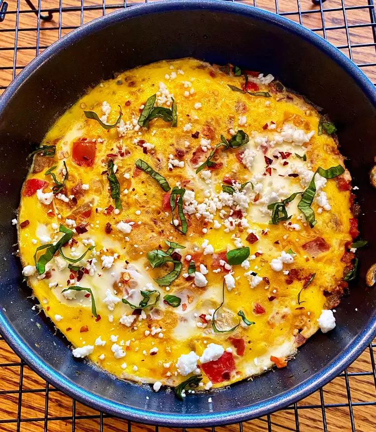

Menemen

Description
This Turkish-inspired egg dish is very similar to the way some Mexican egg breakfasts are prepared.
Very versatile and you can control the level of spiciness.
Ingredients:
- 1 tablespoon extra-virgin olive oil
- ¼ cup chopped onion
- 2 tablespoons diced red bell pepper
- 2 tablespoons diced Aleppo chiles, or to taste
- ½ teaspoon red pepper flakes
- 1 teaspoon minced garlic
- ¼ cup chopped tomato
- salt and ground black pepper to taste
- 3 large eggs, beaten
- 1 tablespoon thinly sliced basil leaves
- 1 tablespoon crumbled feta cheese
Directions:
-
Heat olive oil in a saucepan over medium-high heat. Add onion, salt, and lamb. Break up lamb into small crumbles. Cook, occasionally stirring, until most of the liquid evaporates, about 8 minutes. Toss in garlic, currants, pine nuts, cumin, coriander, cinnamon, paprika, black pepper, cayenne, and allspice. Cook and stir for 1 minute.
- Pour tomato sauce into lamb mixture. Add water, stir, and reduce heat to medium. Cook until lamb mixture dries up and you can stir it without seeing liquid on the bottom of the pan, 20 to 30 minutes. Turn off the heat and let cool completely before using.
- In the meantime, combine egg, yogurt, water, and butter in a bowl. Whisk together thoroughly.
- Preheat the oven to 400 degrees F (200 degrees C). Butter a round baking pan or sheet pan.
- Place 2 sheets of phyllo on your work surface. Keep remaining sheets covered with a damp towel. Sprinkle some egg wash lightly on top and spread using a pastry brush. Layer on 2 more sheets, one at a time, brushing some more egg wash over each.
- Line 1/3 of the lamb filling along one wide edge of the phyllo. Roll pastry up starting from filling side and place it against the edge of the pan. Brush more egg wash on top.
- Shape and fill 2 more rolls with remaining phyllo, most of the egg wash, and filling. Wrap rolls along and inside the first one, filling the pan, and brush with egg wash. Sprinkle sesame seeds on top.
- Bake in the preheated oven until browned and crisp, 35 to 40 minutes. Let cool for 15 minutes.
- Combine yogurt, mint, lemon juice, and garlic for the yogurt sauce. Mix in enough water to achieve the desired consistency for dipping. Season with salt and cayenne. Cut börek into wedges and serve with yogurt sauce.
Click here to jump to the top